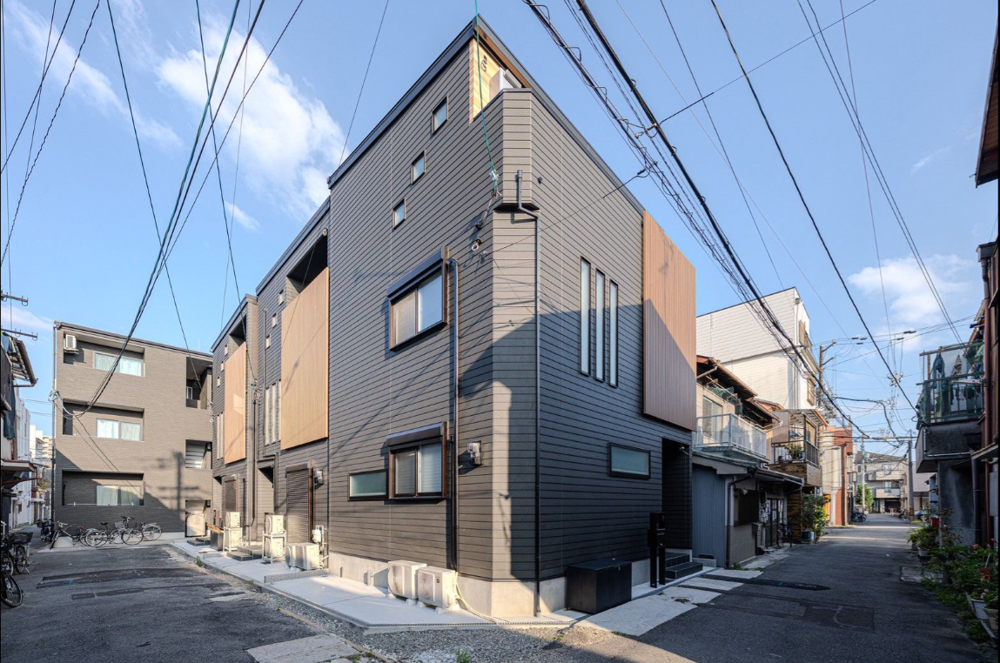
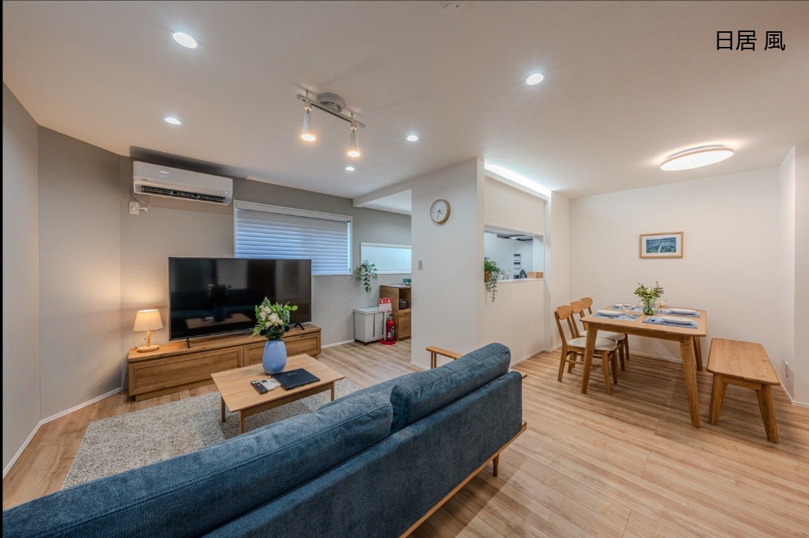
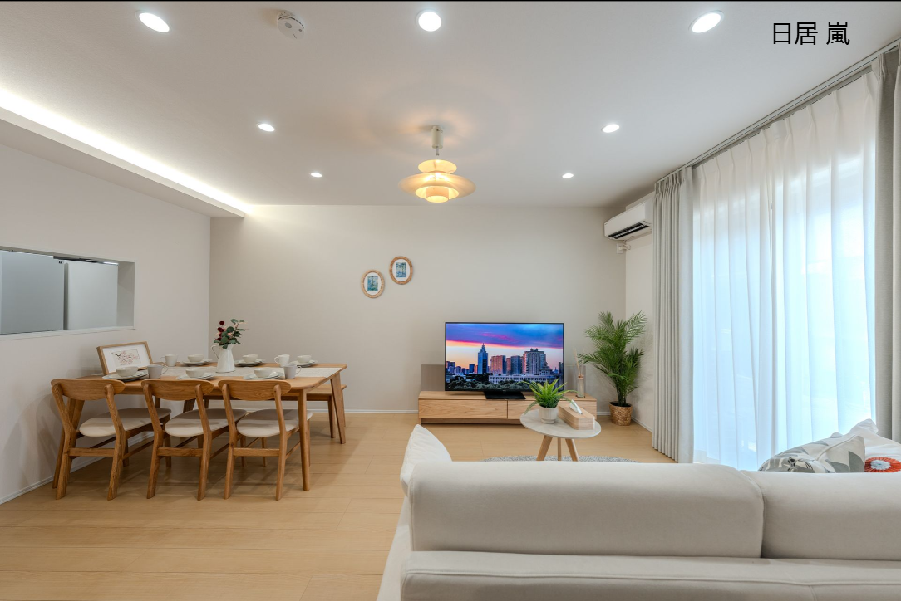

吃貨家族旅遊趣
2026/10/16 (五) – 10/20 (二) ｜ 5 天 4 夜
關西天氣預報
快速行程導覽
點擊直達特定日期或今日行程
大阪 日居民宿 (風 / 嵐)
大阪 日居民宿 風 / 嵐



- 一次性牙刷、牙膏
- 沐浴乳、洗髮精、潤髮乳
- 每位房客 2 條大浴巾
- 吹風機、洗衣精、衣架
- 基本廚具、餐具、洗碗精
- 建議自備個人習慣牙膏洗面乳
- 未提供小毛巾
- 未提供曬衣架及洗衣袋
- 廚房無鹽、糖、油等調味料
- 全棟禁菸
24小時營業。民宿周邊最近的羅森，必買炸雞塊（からあげクン）、Uchi Café 濃郁甜點、宵夜零食與飲品，設有 ATM。
24小時營業。民宿周邊便利的全家，招牌 FamiChiki 無骨炸雞、現磨咖啡與多款日系便利微波輕食。
24小時營業。設有 Seven Bank ATM（支援台灣提款卡跨國提領日幣），小七自家品牌飯糰、關東煮與美味泡麵。
24小時營業！極度便宜（激安），黃底紅字招牌，適合買平價熟食、飲料與零食。
營業至 21:00。生鮮超市，乾淨明亮，主打新鮮蔬果、肉類與日式家常食材。
營業至深夜 24:00。天下茶屋站前，賣場大、動線寬，有麵包坊、水產及極豐富熟食便當。
營業至 21:00。大包裝超劃算，冷凍食品、進口零食、飲料單價極低，適合整批採買。
營業時間 10:00–19:30。倉儲式折扣超市，箱裝飲料、泡麵餅乾價格極實惠。
✈ 班機資訊 (2026/10/16 – 10/20)
🚐 交通包車與費用總覽
服務公司：阪神旅遊 HS TOURIST
車型配置：豐田考斯特 (Toyota Coaster, 22人座級別)
用車時間：每日 10 小時 (服務時間 08:00 – 21:00)
🧳 5天4夜 行李準備對照表
採洋蔥式穿法，白天溫和舒適，早晚及山區 (D2美山/天橋立) 溫差大，務必攜帶防風外套或薄羽絨。建議穿著極舒適耐走的步行鞋。
⚠️ 必須放置於「隨身手提行李」：嚴禁放入大行李箱託運，否則安檢時會被拆箱沒收。
標示必須清晰：機身外殼須有明確容量標示（如 Wh 或 mAh），無標示、模糊或無 BSMI 認證者會被安檢扣留。
容量規格限制：100Wh 以下（約 20,000mAh 內）可安心隨身攜帶；100Wh~160Wh 每人限帶 2 個；超過 160Wh 禁止帶上飛機。
民宿已提供吹風機、沐浴乳、洗髮精、大浴巾、牙刷牙膏。